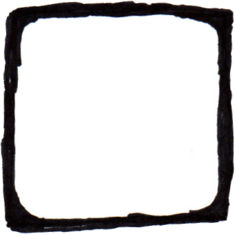
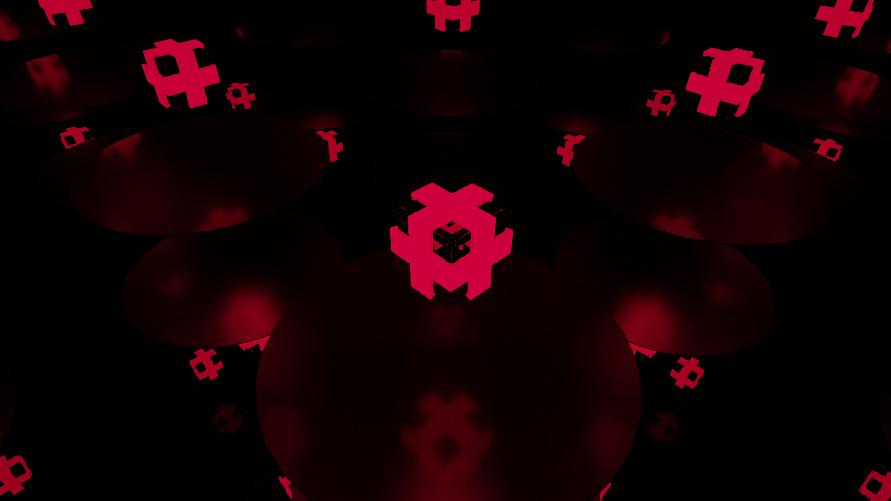
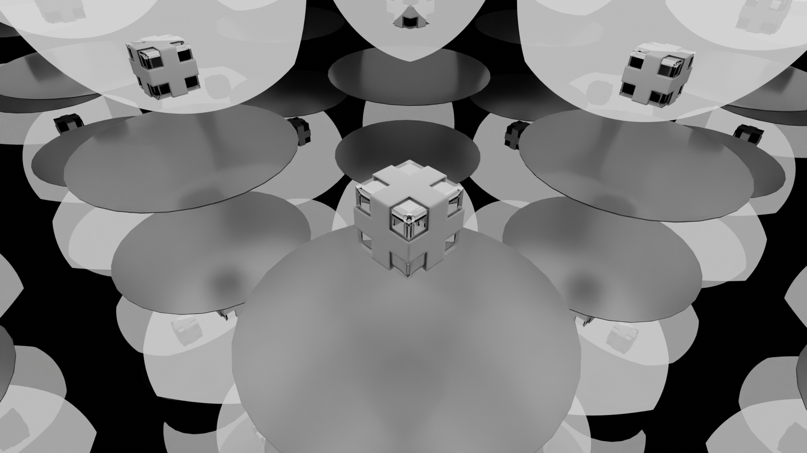
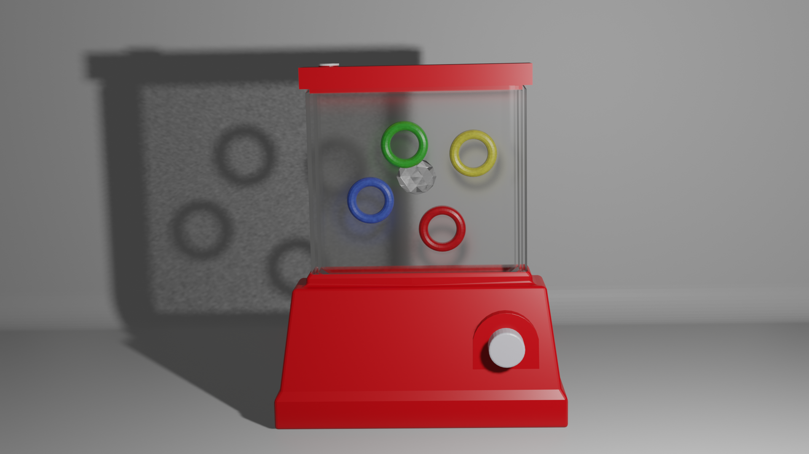
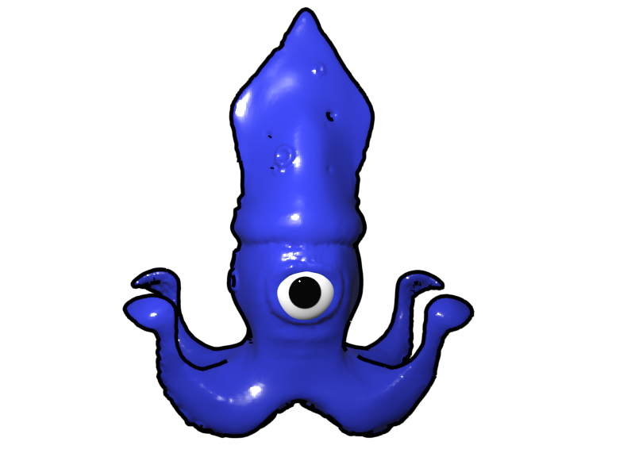
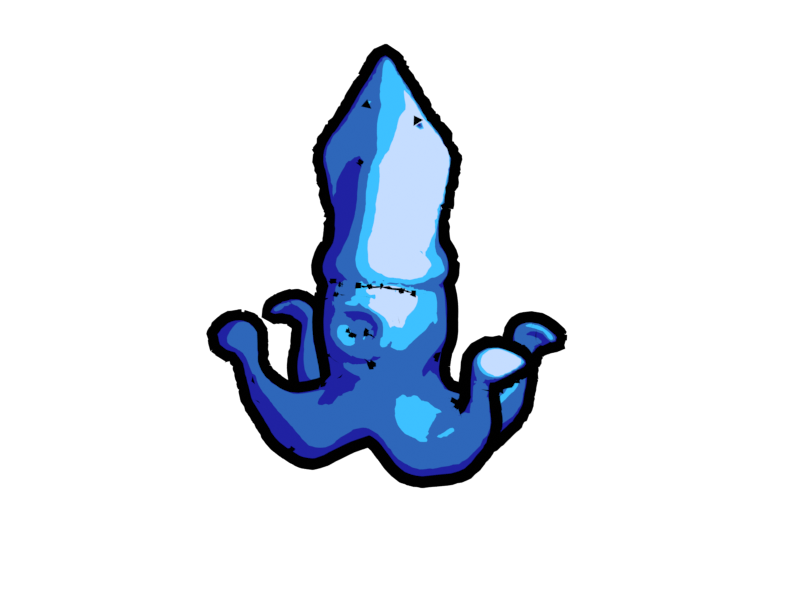
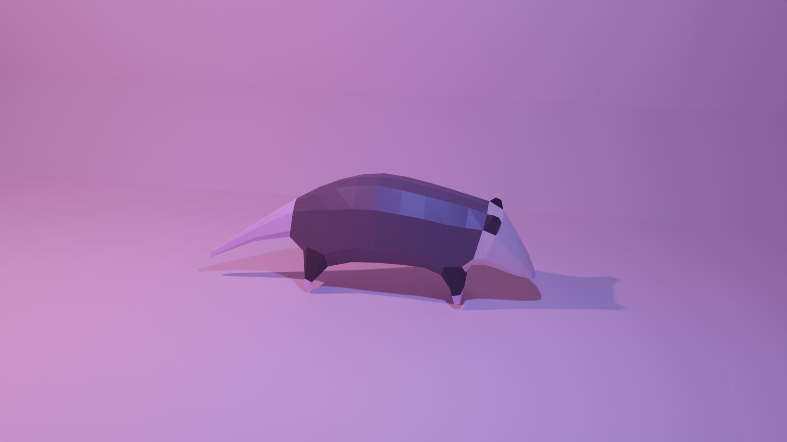
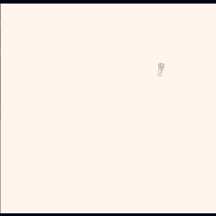

<link rel="stylesheet" href="art_style.css">
<section class="layout">
  <div class="header"><p>It's the art zone!!!</p>
    <div class="buttonRow">
    <a>
      
    </a>
    <p></p>
    <a href="index.html">
      
    </a>
    <p><---Take me back</p>
    </div>
  </div>
  <div class="image_viewer">
    
    <div id="viewinfo">
      <div id="viewtitle">Try clickin' one of the images below!</div>
      <div id="viewdesc">...</div>
  </div>
</div>
  
  <div class="footer">
    <div class="header">Paintings
      <div class="art_body">
        
      </div>
    </div>
    <div class="header">3D Models
      <div class="art_body">
        
        
        
        
        
        
        
        
      </div>
    </div>
      
    <div class="header">Chicory: a Colorful Tale .gifs</div>
    
    <div class="header">Misc.</div>
    
    aaa
  </div>
</section>


<script>
  function kremling_death_sound() {
      var audio = new Audio('https://www.mariowiki.com/images/9/9d/Kremling_SFX_1.oga');
      audio.play();
  }

  var id = null;
  var art_banner_pos = 70;
  function animateArtBucketUp() {
    var bucket = document.getElementById("ArtBanner");
    console.log("(up) art_banner_pos is:", art_banner_pos);
    clearInterval(id);
    id = setInterval(frame, 10);
    function frame() {
      if (art_banner_pos <= 0) {
        clearInterval(id);
      }
      else {
        art_banner_pos -= 3;
        bucket.style.backgroundPositionY = art_banner_pos + "px";
      }
    }
  }

  function animateArtBucketDown() {
    var bucket = document.getElementById("ArtBanner");
    console.log("(down) art_banner_pos is:", art_banner_pos);
    clearInterval(id);
    id = setInterval(frame, 10);
    function frame() {
      if (art_banner_pos >= 70) {
        clearInterval(id);
      }
      else {
        art_banner_pos += 2;
        bucket.style.backgroundPositionY = art_banner_pos + "px";
      }
    }
  }

//The following code is based on what is found at: https://im-ashl.neocities.org/galleryhead

    var gPoints = [];//Gallery points. Indicates the FIRST element of the start of each gallery.
    var gLastPoints = [];
    var gNames = ["main","doodles","old","cursed"]; // Filled in w/ names of gallery
    var gIMG = []; // The first image of every gallery.
    var gLastIMG = [];
    var simg = 5; // The current image number. 
    var sele; // The current image element.

    function getVIMG () {
        var viewbox = document.getElementById("viewbox");
        var viewimg = document.getElementById("viewimg");
        var viewdesc = document.getElementById("viewdesc");
        var viewtitle = document.getElementById("viewtitle");
    }
    function setIMG(p1) { // Sets the current image, current title, and current description - given an image passed by "this".
        viewimg.src = p1.src;
        viewtitle.textContent = p1.dataset.title;
        viewdesc.textContent = p1.dataset.desc;
        simg = p1.dataset.imgno;
        sele = p1;
    }     
    function changeGallery(p1, p2) { // Should also change the image to the first element of this gallery
        var galleries = document.getElementsByClassName("galleryholder");
        var gname = "g" + p1;
        var catchTab = 0; 
        for (var i = 0; i < galleries.length; i++) {
            galleries[i].style.display = "none";
            if (galleries[i].id == gname) {
                galleries[i].style.display = "inline-block";
                changeIMG(gIMG[i]);
                catchTab = i;
            }
        }
        var tabs = document.getElementsByClassName("tabsingle");
        
        for (var i = 0; i < tabs.length; i++) {
            tabs[i].id = "unselectedTab";
            
        }
        tabs[catchTab].id = "selectedTab";
        
    }

    function getMyGalleryName (p1) { // Given an int, find which gallery this IMG belongs to.
    var galleryName = "undefined";
    var found = 0; 
        for (var k = 0; k < gNames.length - 1; k++) {
            if (found == 0) {
                if (p1 < gPoints[k + 1]) {
                    galleryName = gNames[k];
                    found++;
                }
            }
        }
        if (found == 0) { // Last thing in gallery
            galleryName = gNames[gNames.length - 1];
        }
        return galleryName;
    }
    function getMyGalleryNo (p1) { // Given an int, find which gallery this IMG belongs to.
    var galleryNo = 0;
    var found = 0; 
        for (var k = 0; k < gNames.length - 1; k++) {
            if (found == 0) {
                if (p1 < gPoints[k + 1]) {
                    galleryNo = k;
                    found++;
                }
            }
        }
        if (found == 0) { // Last thing in gallery
            galleryNo = (gPoints.length - 1);
        }
        return galleryNo;
    }
    function init() {
        //Give every image a number within its gallery, and what gallery it belongs to.
        var galleries = document.getElementsByClassName("galleryholder"); 
        var myIMGno = 0;
        for (var i = 0; i < galleries.length; i++) { // For every gallery...
            var images = galleries[i].getElementsByTagName('IMG');
            gPoints[i] = myIMGno; 
            gIMG[i] = images[0];
            var jHold = 0; 
            for (var j = 0; j < images.length; j++) {
                images[j].dataset.imgno = myIMGno; 
                images[j].className = "galleryimg"
                myIMGno++;
                jHold++;
            }
            gLastPoints[i] = myIMGno - 1;
            gLastIMG[i] = images[images.length - 1];
            changeGallery('main');
        }
    }
    function changeIMG(p1) {
        getVIMG();
        setIMG(p1);
        viewbox.style.display = "block"; // Reveal display block, even if not done yet.
    }
    function shiftIMG(p1) { // ack curses me messy code :|
        getVIMG();
        var myNo = getMyGalleryNo(simg);
        if (p1 == 1) {// Going Forwards...
            if ((simg) == gLastPoints[myNo]) {
                setIMG(gIMG[myNo]);
            }
            else { // keep moving forwards!
                var sneet = sele.nextElementSibling;
                while (sneet.nodeName != "IMG") {
                    sneet = sneet.nextElementSibling;
                }
                setIMG(sneet);
            }
        }
        else if (p1 == -1) {
            if ((simg) == gPoints[myNo]) {
                setIMG(gLastIMG[myNo]);
            }
            else { // keep moving forwards!
                var sneet = sele.previousElementSibling;
                while (sneet.nodeName != "IMG") {
                    sneet = sneet.previousElementSibling;
                }
                setIMG(sneet);
            }
        }
    }   
</script>